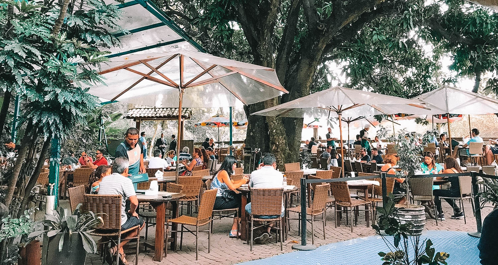
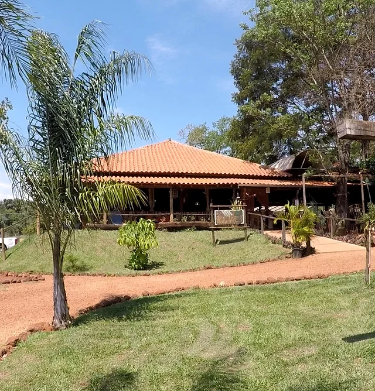

| |
Home | Menu | Feedbacks | Contato |
Descubra o sabor autêntico de Minas Gerais no restaurante mineiro!
Localizado no coração de paraisópolis, nosso restaurante oferece uma experiência culinária única que celebra as tradições e os sabores inconfundíveis da cozinha mineira!
No restaurante mineiro, cada prato é preparado com ingredientes frescos e selecionados, garantindo o verdadeiro gosto da roça.
Nossa equipe de chefs talentosos segue receitas tradicionais que foram passadas de geração em geração, proporcionando a você uma viagem gastronômica ao interior de Minas Gerais.
Nosso cardápio é repleto de delícias que agradam a todos os paladares. Desde o famoso pão de queijo, passando pelo feijão tropeiro, frango com quiabo, até a irresistível sobremesa de doce de leite.
Oferecemos opções vegetarianas e pratos especiais para crianças, garantindo uma experiência agradável para toda a família.
|  |
Com uma decoração que remete às fazendas mineiras, nosso restaurante oferece um ambiente acolhedor e familiar.
Cada detalhe foi pensado para que você se sinta em casa, desde o atendimento caloroso até a música ambiente que embala sua refeição.
Quer comemorar uma ocasião especial?
O restaurante mineiro é o lugar perfeito para aniversários, confraternizações e eventos corporativos.
Oferecemos pacotes personalizados e um espaço reservado para tornar sua celebração inesquecível.
|  |
Estamos abertos todos os dias, prontos para recebê-lo com o melhor da culinária mineira.
Faça sua reserva pelo telefone (35) 3924 - 5986 / Whatssapp (35) 99854 - 6543.
Estamos localizados na Av. Jardim, nº 43 - Jardim Dourado - Paraisópolis/MG!
ESPERAMOS POR VOCÊS!